🌀 Hollow Assault "Beyblade" — Endgame 0.5
หมายเหตุ: คำแปลแบบเรียบเรียงให้อ่านง่าย (ไม่ใช่คำต่อคำ) · ชื่อสกิล/ไอเทมคงอังกฤษ + ชื่อไทยจากเกม + ไอคอนจากฐานข้อมูล poe2db · บิลด์นี้ผู้ทำบอกว่าเป็น league starter ที่แข็งที่สุดที่เคยเล่น
🗂️ ไอคอนสกิล/ไอเทมหลัก
ขอบสี: ฟ้า = Spirit · ส้ม = Unique · ทอง = Support · เทา = Skill
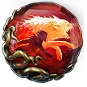
ตะครุบPounce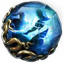
ฝ่ามือมรณะKilling Palm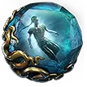
ระบำวิญญาณGhost Dance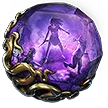
เผยแผ่คำสาปBlasphemy ลมร่ายรำWind Dancer
ลมร่ายรำWind Dancer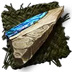
Rakiata's FlowSupport Lochtonial CaressGloves — แกนบิลด์
Lochtonial CaressGloves — แกนบิลด์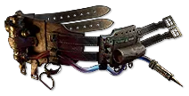
MagebloodBelt (chase) IngenuityBelt
IngenuityBelt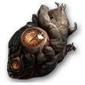
Heart of the WellJewel MegalomaniacJewel
MegalomaniacJewel⚙️ กลไกหลัก (Core Mechanics)
Lochtonial Caress
+ keystone Way of the Stonefist → ถุงมือสร้าง charge ให้พวกพ้องเมื่อโจมตีโดน ·
clone (ร่างแยก) สืบทอดค่าสเตตัสของเรา จึงสร้าง charge ให้เราในฐานะ "พวกพ้อง" ได้ ·
charge เหล่านี้ถูกใช้ตอน channel Hollow Form
→ เพิ่มดาเมจ Whirling Assault เป็น 3 เท่าภายในสกิลนั้น
clone จะตี Whirling/Rolling Assault จนจบชุดเสมอ · attack speed ไม่มีผลกับ clone แต่ไปเพิ่ม ความเร็วในการ channel Hollow Form ของเรา → ดาเมจรวมยังเพิ่มขึ้นอยู่ดี
🛡️ การป้องกัน (Defensive)
จุดเปลี่ยนใหญ่จากเวอร์ชันก่อน คือ เพิ่ม Energy Shield เป็น 2 เท่า โดยใช้ body + helmet เป็น ES ล้วน
เพื่อคง Evasion สูง ๆ ไว้: roll modifier Legacy of Jade บน Mageblood · ถ้าราคาแพงไป ให้หา Evasion จากแหวน/รองเท้าแทน (flat evasion สเกลดีมากกับ node hybrid defense บนผัง) · หรือเล่น gear แบบ hybrid Evasion/ES ก็ยังดี
📈 เลเวลลิ่ง (Leveling)
ผู้ทำบอกว่านี่คือ league starter ที่แข็งที่สุดเท่าที่เคยเล่น — ตั้งแต่ ~เลเวล 60 ที่มี Hollow Palm ก็ดัน T15 ได้แทบจะทันที พอได้
Lochtonial Caress + Rolling Assault มันแรงกว่าบิลด์ทั่วไปแทบทุกตัว
ช่วงก่อนหน้านั้น: เลือกสาย leveling ของ Monk ตามถนัด (บางคนใช้ Twister/Bow leveling) ผู้ทำแนะนำตามไกด์ของ FG Corbin ดีมากสำหรับพื้นฐาน quarterstaff ช่วงต้นเกม
🔨 Crafting / Gear
Staff — สำคัญสุด (เป็นฐานดาเมจ)
- ฐาน: ซื้อ/เก็บ base ที่มี IPD + attack speed (เก็บจากพื้นมา transmute ก็ได้)
- ใช้ Essence of Abrasion → flat physical damage
- Desecrate ด้วย Ancient Jawbone → แล้วหา hybrid physical + accuracy
- ที่เหลือคือ "อธิษฐาน" — ใช้ Exalt เติม suffix ช่วง mid แล้วลุ้นเอา
Body / Helmet / Boots
- เก็บ white base ที่ดีที่สุดสำหรับบิลด์จากพื้นมาเยอะ ๆ → Greater Chance Orb ในแมพ → Greater Augment หา prefix ดี ๆ
- ข้อดีของ base ป้องกัน: prefix พวก ES/defense มี weight สูง (ต่างจาก weapon) คราฟต์ง่ายกว่า · garantee rarity ได้
- ตัวอย่าง helmet: เริ่ม increased ES + lightning res → Essence of Opulence (garantee rarity suffix) → desecrate garantee prefix (Preserved Rib) → slam ปิด
- Boots เลือก Evasion / Evasion-ES hybrid เพราะ line "Deflection rating = Evasion rating" แรงมากบน gear (บนผังกลับห่วย) · boots prefix แย่กว่าชิ้นอื่นเพราะเสียช่องให้ movement speed
Rings / Amulet
- Rings: เก็บ tier 4–5 จากพื้น (mod กวนน้อยกว่า) · prefix เอา flat physical/cold/lightning/fire อันไหนก็ได้ · เน้น double rarity + เติม res/attribute
- Amulet: +3 ไม่สำคัญมาก (แต่เพิ่มดาเมจพอควร) · ที่สำคัญสุดคือ spirit implicit ≥10 (gem quality ช่วยลด reservation ของ Blasphemy + Ghost Dance) · ถ้าได้ spirit เยอะอาจใส่ banner/Wind Dancer เพิ่มได้
Uniques
- Lochtonial Caress
บังคับ (base = Tempered Mitts) · หา line "10% power charge granting" · ดู roll ไม่ได้ก่อนสวม ถ้า roll ห่วยเอาไป reforge ที่ Verisium Anvil ได้ 1 ครั้ง
- Mageblood เป็น chase ·
Headhunter ก็ดี · ก่อนได้ให้ใช้
Ingenuity หรือ rare belt ไปก่อน
- เกร็ด Mageblood: ถ้า modifier (Legacy) ซ้ำกัน จะได้ผลเพิ่มกับ "ทุก Legacy" ที่ใช้งาน เช่น Legacy of Quicksilver ซ้ำ → ได้ทั้ง move speed (รวม ~42%) ไม่ใช่แค่ตัวเดียว
🔰 Runes
- Legacy of Fox Trade (~30 div) — 10% move speed ติดตลอด (เพราะเป็น Chaos) + 100% evasion rating แบบ global ดีมาก
- Boarding + keystone Hollow Keeper (ปลด 2 node) → curse immunity ตลอดเวลา ใส่บน boots
- Resistance runes ตามที่ขาด
- Katigan's Epiphany → +1 jewel socket (jewel โดยเฉลี่ยแรงกว่า rune)
💢 Rage Generation
⚠️ Rage generation ไม่ proc จาก Hollow Form (เพราะนั่นคือ clone ตี ไม่ใช่เรา) — แต่ proc จาก Hollow Focus (ระเบิดกระดิ่ง = ดาเมจของเราเอง) → ได้ rage uptime ต่อเนื่อง
มี rage generation จาก Devour ด้วย · ใส่บน Pounce ก็ได้ (เริ่มบอสมี ~10 rage)
🔷 Jewels
- Heart of the Well (~5 div) — gain ES เป็น extra lightning จาก body armor (52%!) + ailment/stun threshold = ES (ไม่ต้องเก็บ node) hyper efficient (ไม่สเกลจากผังแต่แรงมาก)
- Megalomaniac — ให้ Reaching Strike (weapon range สเกลแบบ additive→more กับ staff + AoE) เพิ่ม AoE เยอะ · optional/ข้ามได้
- Time-Lost jewel — ตำแหน่งดีมาก ครอบ 6 notable → notable passive scaling แรง (คราฟต์ด้วย distilled emotion: Liquid Suffering garantee 1% move speed แบบไม่มี roll range)
💧 Mana Sustain
Well of Power แก้ปัญหา mana เกือบทั้งหมด (ใช้ power charge เยอะ) · ไม่พอกดขวด mana · ยังไม่พออีกเอา node Conservative Casting (efficient มาก หาง่าย)
💎 Gem Setup
Whirling Assault (สกิลหลัก)
ดันถึง 21 ง่าย — gem ระดับไหน socket ไหนก็ได้ corrupt จนได้ +1 (corruption) แล้วใช้ level 20 uncut ตามทีหลัง · ถูกมาก
ครึ่งหนึ่งของงบบิลด์อยู่ใน setup ของ Hollow Form (support แพงมาก)
Support หลักใน Hollow Form / Whirling Assault
- Rakiata's Flow — แม้ดูเป็นบิลด์ physical แต่ครึ่งหนึ่งของดาเมจกลายเป็น elemental (gain-as จาก diamond + Devour buff + Rend อีก 50%) → Rakiata OP
- Garukhan's Resolve — bifurcation OP สำหรับบิลด์ crit attack (ผู้ทำเรียกผิดเป็น "Garacon's")
- Verana's Siege — AoE ตอนเคลียร์ + more damage ตอน single target (ไม่มีไอคอนใน DB)
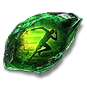
Mobility — เล่นลื่นขึ้น
ทางเลือกอื่น: 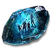 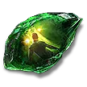 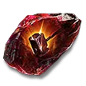 Lightning Attunement/Infusion ·
Armour Breaker III (เคลียร์แมพดี) · Heavy Swing (ดาเมจมากแต่กระทบ AoE)
Lightning Attunement/Infusion ·
Armour Breaker III (เคลียร์แมพดี) · Heavy Swing (ดาเมจมากแต่กระทบ AoE)
Pounce + Devour (companion / utility)
- Pounce
+ Brutus' Brain → ~45–60% more damage + armor break จาก
 Mark for Death (Predator's Mark) · ใส่ตัวเพิ่ม minion count ให้ครบเพื่อรับ more damage เต็ม
Mark for Death (Predator's Mark) · ใส่ตัวเพิ่ม minion count ให้ครบเพื่อรับ more damage เต็ม - Devour ~เหมือน Killing Palm แต่เลือก Devour เพราะอยู่ weapon set 2 ที่มี skill effect duration เยอะ → ยืดเวลา Blazing Critical / Thrill of the Kill (จาก ~5 วิ เป็น ~14 วิ)
- Ghost Dance + Blasphemy ยังใช้อยู่
ถ้า Pounce ตั้งไว้แค่ weapon set 2 พอสลับกลับ set 1 หมาป่า (wolves) จะหายไป · วิธีแก้: ถอด staff ออก → allocate Pounce ใน weapon set ทั้งสอง → ใส่ staff กลับ หมาป่าจะอยู่ทั้งสอง set
📜 Quest Rewards (รางวัลถาวร)
| Act / โซน | รางวัลที่เลือก |
|---|---|
| Act 3 — Venom | Mana Regeneration |
| Act 4 — Shark Fin | Increased Evasion + Energy Shield |
| KMA | Movement Speed |
ผู้ทำบอกว่ารายละเอียดรางวัลเต็มอยู่ในไกด์ Mobalytics (MOA) ของเขา และผังสกิลจะปรับอีกหลายรอบเพื่อทดลอง
📋 Hollow Assault Beyblade — ไกด์ทางการ (Mobalytics)
คลาส Monk → Martial Artist · เวอร์ชัน 0.5 RotA · โดย Jungroan (Verified) · 2.2K favorites · อัปเดต 8 มิ.ย. 2026
นี่คือไกด์ต้นฉบับบนเว็บ Mobalytics — คลิปในแท็บแรกอ้างอิง/ต่อยอดจากบิลด์นี้
ห้ามใช้ Verisium Anvil กับช่อง Runic Forge ที่ให้ค่าป้องกันสำคัญ (Evasion / Energy Shield) — มันจะกินค่านั้นทิ้ง
Hollow Form + Whirling Assault → ดาเมจ ×3 เมื่อใช้ power charge · charge ถูก oversustain ผ่าน Lochtonial Caress + Way of the Stonefist (clone สร้าง charge ให้) · charge ส่วนเกินป้อนเข้า Charge Regulation
Support gem ต้องการ: Str 40 · Dex 60 · Int 35
🎯 เวอร์ชัน (Variants)
Early Endgame · Midgame · Map Start · 41 (Minimum Viable)
💎 Skill Gems
| # | Gem |
|---|---|
| 1 | Quarterstaff Strike ฟาดด้วยไม้พลองวรยุทธ์ |
| 2 | 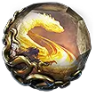 Rend ปาดเนื้อ |
| 3 | Hollow Form ร่างทรงขลัง |
| 4 | Hollow Focus สมาธิขลัง |
| 5 | Pounce ตะครุบ |
| 6 | Blasphemy เผยแผ่คำสาป |
| 7 | Ghost Dance ระบำวิญญาณ |
| 8 | Charge Regulation ควบคุมชาร์จ |
| 9 | Devour เขมือบ |
สกิลบางตัว (Hollow Form lv40 / Hollow Focus / Charge Regulation) ระบบจะเพิ่มให้อัตโนมัติเมื่อเลเวลถึง (40, 65, 90)
เคลียร์แมพ: ปุ่มเดียว — แตะ Hollow Form เพื่อเรียก clone Whirling Assault
Single target: 1) ทลายเกราะด้วย 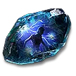Mark for Death II → 2) เปิด Predator's Mark = ศัตรูรับดาเมจ +45% (ผ่าน
Pounce ต้อง active ทั้ง 2 weapon set (ถอด staff → allocate ทั้งสอง set → ใส่กลับ) ไม่งั้นหมาป่าหายตอนสลับอาวุธ
💧 Mana
- Well of Power anoint แก้ปัญหา mana (เพราะใช้ power charge เยอะ)
- Conservative Casting — 3 node ลดค่าร่ายคุ้มมาก
- ช่วงต้นใช้ Lavianga's Spirits ได้ (แก้ขัดแต่ไม่ efficient ที่สุด)
📜 Quest Rewards
| Act / โซน | รางวัล |
|---|---|
| Act 1 — Beira | +10% Cold Res |
| Act 1 — King in the Mists | +30 Spirit |
| Act 1 — Candlemass | +20 max Life |
| Act 2 — Sisters of Garukhan | +10% Lightning Res |
| Act 2 — Medallion | +30% Charm Charges + 1 Charm Slot |
| Act 3 — Ignagduk | +30 Spirit |
| Act 3 — Blackjaw | +10% Fire Res |
| Act 3 — Venom Draught | +25% Mana Regen Rate |
| Act 4 — Goddess of Justice | +30% Mana Recovery from Flasks |
| Act 4 — Navali's Rest | +5% max Mana |
| Act 4 — Halls of the Dead (3 tests) | +5% Fire / Cold / Lightning Res |
| Interlude — Molten Shrine | +5% max Life |
| Interlude — Tabana's Pillar | +3% Move Speed |
| Interlude — Lythara | +40 Spirit |